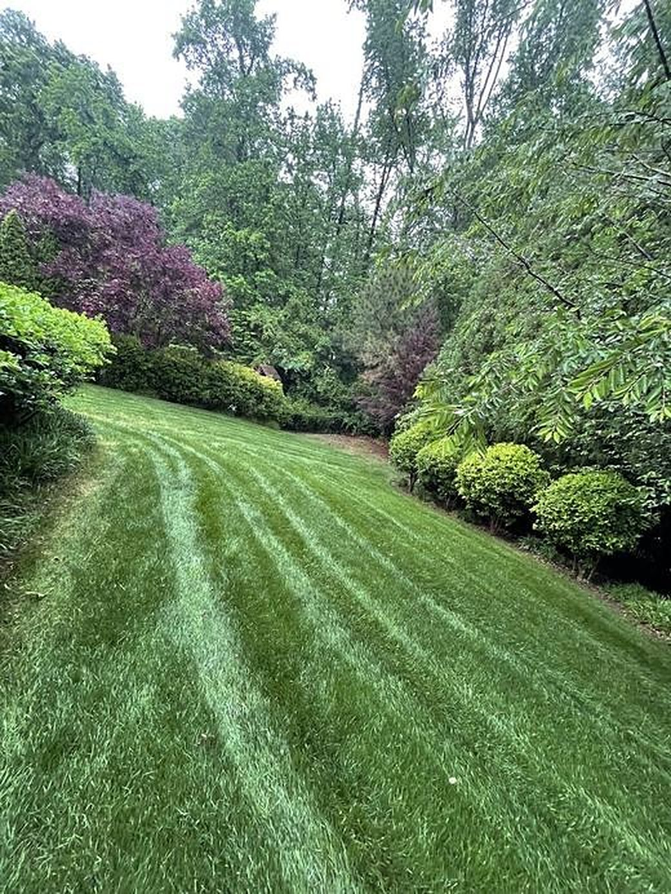
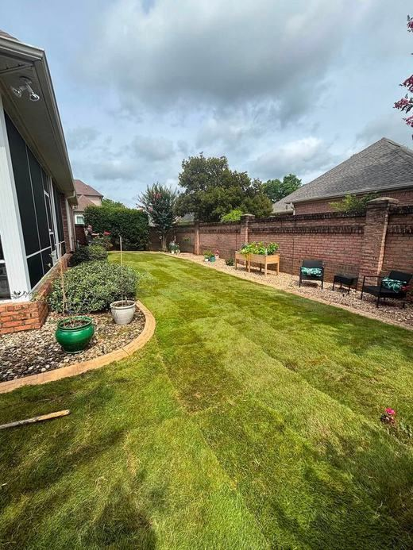
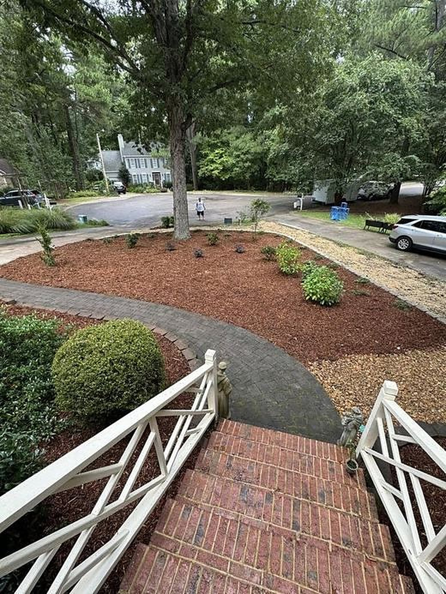

Christmas Light Installation
A full holiday lighting package: we bring the lights, hang them, keep them glowing all season, then take them down and store them for next year.
Done right, every time
Hanging Christmas lights on a two-story roof in the cold is nobody's favorite job, and buying, testing and storing strands every year adds up. With our seasonal package you don't buy or store a thing. We supply commercial-grade lights, custom-cut wiring, clips, plugs and a timer, and install the design you approve.
Through the season, normal lighting repairs are included, so if a section goes out we come back and fix it. After the holidays we take everything down on the dates set for your home and store the lights until next year. The lights stay our property, and you pay for the seasonal service.
Christmas Lighting services
Free Estimate & Design Mockup
Send a photo of your house or we visit and measure, then we show you a mockup of the proposed design.
Commercial-Grade C9 Rooflines
Bright C9 bulbs along rooflines and peaks, typically spaced about 15 inches apart for a clean, even look.
Your Choice of Colors
Warm white, cool white, red, multicolor, or red and white.
Trees, Bushes & Columns
Wrapped trees, lit bushes and columns can be added to any design.
Everything Supplied
We provide the lights, custom-cut wiring, clips, plugs and timer. Nothing to buy.
In-Season Maintenance
Normal lighting repairs are included through the season.
Takedown & Storage
We take the lights down after the holidays on a scheduled date and store them for next year.
One-Season or Two-Year Pricing
Choose a one-season price, or save with a discounted annual price on a two-year agreement.
Book early
Many homes in Apex, Cary and Holly Springs are two stories with steep peaks and several rooflines. They look fantastic outlined in lights, and they are exactly the kind of ladder work that is better left to a crew.
Installation schedules fill up as the holidays get closer, so October and early November are the best times to book. Lights are typically up in November and come down in early January, with the exact dates set for each home.
Getting started is easy
01Free Estimate & Mockup
Send us a photo of your house or we come out and measure the roofline. Then we show you a mockup of the proposed design.
02Choose Your Lights
Commercial-grade C9 bulbs for the roofline in warm white, cool white, red, multicolor or red and white. Add trees, bushes or columns if you like.
03Approve Your Quote
Pick a one-season price or a discounted annual price with a two-year agreement. Your quote shows exactly what you pay each season.
04Installation
We bring the lights, custom-cut wiring, clips, plugs and timer, and install the design you approved.
05All-Season Maintenance
If something goes out, we fix it. Normal lighting repairs are included through the season.
06Takedown & Storage
After the holidays we take everything down on your scheduled dates and store it for next year.
Google Reviews
Top-rated by our neighbors
Every one of our Google reviews is five stars. See what Triangle homeowners say about working with us.
Carolina Premier Lawn & Tree does a great job. They mow, edge and blow our yard, trim the hedges. All their work is done professionally and timely. They are dependable and communicate with us if there's a change in their schedule and they are delayed. I highly recommend Jerry and his crew for all your landscape needs.
Jerry and his crew did an amazing job mulching my already mature gardens. He was quick to respond when I requested a quote; quoted a great price, in my mind, and was prompt and considerate. I will definitely be using Carolina Premier again. Thank you!
Highly recommend Carolina Premier Lawn and Tree Services. They are reliable, affordable, and always responsive. They show up when they say they will, communicate well, and consistently do quality work.
Christmas Lighting FAQ
Do I need to buy the lights?
No. We supply everything: commercial-grade lights, custom-cut wiring, clips, plugs and a timer. The lights stay our property and we store them between seasons, so you never buy, untangle or store a thing.
What does the seasonal package include?
Design, the lights and materials, installation, normal repairs during the season, takedown after the holidays and storage until next year.
How is Christmas light installation priced?
Pricing is based on the length of your roofline, how difficult the roof is to work on, and the design, with trees, bushes and columns as add-ons. You can choose a one-season price or a discounted annual price with a two-year agreement, and your quote shows exactly what you pay each season.
What if a section goes out?
Normal lighting repairs during the season are included. Damage from outside causes, like storms or someone pulling the lights, may be billed separately as outlined in your agreement.
When do the lights come down?
After the holidays, usually in early January. Your takedown dates are set in your agreement.
Can you install lights I already own?
Yes. We also do one-time installations where you keep the materials. That's quoted separately from the seasonal package.
Christmas Lighting near you
Pick your town to see our Christmas Lighting services there.
Other ways we can help

Lawn Care & Maintenance
Mowing, edging, aeration, overseeding, sod, lawn repair and seasonal cleanups.
Learn more →
Sod Installation
New sod laid on properly prepared soil for an instant, thick lawn.
Learn more →
Landscaping
Design, new beds, planting, privacy trees, mulch, stone, edging, trimming and overgrowth removal.
Learn more →Ready for a better-looking yard?
Free estimates across Apex and the Triangle. Call or text today.